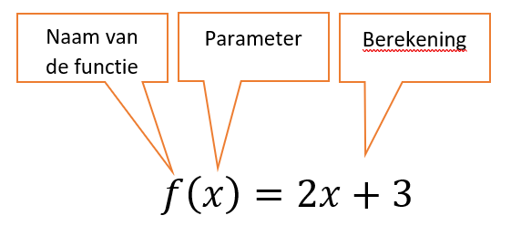

Functies#
Fun met Python functies!
Computing#
Berekeningen, handelingen op data
Een computer rekent, en daarmee voert het handelingen op data uit. Met data heb je kennisgemaakt en hoe dit door de computer wordt opgeslagen (denk aan de “dozen” in het geheugen en bits als fundamentele informatie-eenheid). Maar hoe worden bewerkingen op deze data uitgevoerd? We gaan kennismaken met een andere bouwsteen om te kunnen handelen: functies! Met een functie vertellen we de computer om een opdracht uit te gaan voeren.
Handelen#
Input en output
len("huiswerk")
8
Je hebt inmiddels al functies gebruikt, bijvoorbeeld de functie len(x). Deze functie accepteert een parameter (een waarde, de input) en geeft een resultaat terug (output). We weten of zien niet welke handelingen len(x) verricht, we weten alleen dat het een waarde terugggeeft. Laten we Python functies eens vergelijken met wat je al kent van andere disciplines, bijvoorbeeld wiskunde.

De wiskunde kent namelijk ook functies. In dit voorbeeld is f de naam van de functie en de x de parameter. Stel we willen f(2) uitrekenen dan krijgen we f(2) = 2 * 2 + 3 De x in de berekening wordt dus vervangen met een 2. Het antwoord op f(2) is 7.
Structuur versus procedure#
Definieert een structuur: wat het is (en wat logischerwijs volgt)
Dit is de syntax die wiskudigen hebben bedacht om een structuur te beschrijven en wat daar logischerwijs uit zou moeten volgen.
def f(x):
return 2 * x + 3
Defineert een procedure: wat het doet (en wat gedragsmatig volgt)
Python heeft ook functies. Het heeft de speciale syntax def (wat define betekent) om te zeggen “Ik definieer een functie”, in dit geval een functie met de naam f die een enkele parameter x accepteert.
De combinatie van naam en welke parameters worden geaccepteerd wordt ook de signatuur van een functie genoemd, want dit is wat het uniek maakt en onderscheidt van andere functies die we gaan schrijven. Let ook op dat een functie definitie wordt afgesloten met de dubbele punt :!
Dit is al een stuk concreter, want anders dan de wiskundige beschrijving definiëren we hier een procedure (één of meerdere handelingen die uitgevoerd moeten worden op basis van een mogelijke input) en een resultaat dat mogelijk met het return statement wordt teruggegeven (output). Let ook op dat alles wat na de dubbele punt volgt moet worden ingesprongen om aan te geven dat het een codeblok is dat onderdeel van de functie is.
Syntax check! De dubbele punt geeft aan dat een nieuwe context volgt, je hebt dit bijvoorbeeld ook gezien bij conditionele statements als if:. De vuistregel is altijd inspringen na een dubbele punt!
Binnen een functie#
def flipside(s):
""" flipside(s): spiegel s!
input s: een string
"""
x = len(s) // 2
return s[x:] + s[:x]
flipside("automaat")
'maatauto'
Laten we gaan kijken naar de binnenkant van functies. We hebben hier een functie flipside gedefinieerd die een string spiegelt. Je ziet dat functie len(x), floor division // en string slicing wordt gebruikt. Maar je ziet ook andere dingen, bijvoorbeeld binnen de functie een nieuwe variabele x en tekst tussen driedubbele aanhalingstekens """.
Docstrings#
def flipside(s):
""" flipside(s): spiegel s!
input s: een string
"""
Met een string met driedubbele aanhalingstekens direct na de dubbele punt documenteer je de functie (voor jezelf en voor anderen). Je beschrijft in deze docstring op de eerste regel kort wat de functie doet en verder andere informatie die nodig is, bijvoorbeeld de typen van parameters. Sommige moderne textverwerkers gebruiken de docstrings om informatie over de functie te laten zien.
Gebruik variabelen#
def flipside(s):
x = len(s) // 2
return s[x:] + s[:x]
De lengte van de string is nodig om vervolgens met een floor division het aantal karakters tot het middelpunt van de string te bepalen. Dit aantal wordt aan de nieuwe variabele x toegekend en deze x wordt vervolgens 2 keer gebruikt voor het slicen van de string (de start- en stop waarden). We breken met het zetten van deze variabele x ook het probleem in stukjes op, en het scheelt ons typewerk!
def flipside(s):
return s[len(s) // 2:] + s[:len(s) // 2]
Je had de stap van het zetten van een variabele ook kunnnen overslaan en de start- en stop waarde voor het slicen van de string ook als resultaat van len(s) // 2 kunnen schrijven, maar je merkt al dat het minder goed leesbaar is. Het gebruik van variabelen helpt de leesbaarheid en zelfs de computer vind het prettiger omdat het efficiënter is: er hoeft maar één keer het aantal karakters tot het midden te worden berekend!
Variabelen opnieuw definieren#
def convert_from_seconds(s):
"""Een getal naar dagen, uren, minuten en seconden
Zet een getal om naar naar een lijst van
[days, hours, minutes, seconds]
input s: een int
"""
days = s // (24 * 60 * 60) # aantal dagen
s = s % (24 * 60 * 60) # restant s
hours = s // (60 * 60) # aantal uren
s = s % (60 * 60) # restant s
minutes = s // 60 # aantal minuten
s = s % 60 # restant s
return [days, hours, minutes, s]
Gebruik variabelen en definiereer ze opnieuw als het nodig is! In dit voorbeeld wordt s steeds opnieuw gedefineerd op basis van het resultaat van een vorige handeling. Een floor division (//) wordt eerst gebruikt om bijvoorbeeld het aantal dagen te vinden en met het restant (%) wordt op dezlfde manier het aantal uren weer gevonden. Hetzelfde proces wordt herhaald voor het aantal minuten tot een restant aan aantal seconden overblijft.
Naast de docstring zie je ook commentaren: alles wat na een # volgt slaat Python over, het doet daar niets mee. Het is vooral voor mensen een manier om opmerkingen tussendoor te plaatsen. Let verder ook op het return statement waar de waarden als list wordt teruggegeven.
Return versus print#
Wat is het verschil?
Je hebt eerder kennisgemaakt met print(x) en deze functie geeft iets terug, althans zo lijkt het! return geeft een resultaat van een functie terug, wat is nu het verschil met print(x)?
def dbl(x):
"""verdubbelt x?
"""
return 2 * x
a_dbl = dbl(20) + 20
Dit is een eenvoudige functie die een waarde verdubbelt en het resultaat teruggeeft met return. Nu een variant met print(x) in plaats van return:
def dbl_pr(x):
"""verdubbelt x?
"""
print(2 * x)
a_dbl_pr = dbl_pr(20) + 20
---------------------------------------------------------------------------
TypeError Traceback (most recent call last)
<ipython-input-5-f85fb4a1e955> in <module>
4 print(2 * x)
5
----> 6 a_dbl_pr = dbl_pr(20) + 20
TypeError: unsupported operand type(s) for +: 'NoneType' and 'int'
Dit geeft een fout op regel 6, waar we bij het resultaat van de functie 20 willen optellen. Waarom deze fout terwijl we wél een resultaat op scherm zien (40)? De verklaring is dat een functie zonder return niets teruggeeft en dat “niets” (verassend genoeg!) wél een waarde heeft, een waarde None (met type NoneType). None (“geen”) representeert het niets en Python zegt ons hier dat we 20 niet bij niets kunnen optellen!
Het niets is voor Python blijkbaar wel “iets” (None)!
Als je er bij stilstaat is dit niet zo gek. Wij mensen maken ook een onderscheid tussen iets en niets (en hebben daar woorden voor, iets of niets) en voor Python is in dit niet(s) anders: het heeft een manier nodig om niets te kunnen representeren en uit te drukken.
De error TypeError krijg je dus als je een bewerking/berekening wil uitvoeren, maar de datatype ondersteunt de bewerking niet. Python is niet in staat om te rekenen met niets.
Het verschil#
print wijzigt pixels op het scherm
return geeft resultaat van de functie-aanroep terug
return is de manier hoe software informatie aan functies doorgeeft, waar het resultaat (output) van de een de input kan zijn voor de ander.
Testen#
# 1: functie definitie
def flipside(s):
""" flipside(s): spiegel s!
input s: een string
"""
x = len(s) // 2
return s[x:] + s[:x]
# 2: Tests
assert flipside('huiswerk') == 'werkhuis'
assert flipside('popster') == 'sterpop'
print(" toplap ~", flipside('laptop')) # print het resultaat naar het scherm
toplap ~ toplap
Voeg assert statements toe, waar assert een aanname betekent. Bijvoorbeeld, lees
assert flipside('huiswerk') == 'werkhuis'
als “neem aan dat het resultaat van de aanroep flipside('huiswerk') gelijk is aan de string 'werkhuis'”. Verder kan je natuurlijk altijd print statements gebruiken om waarden naar het scherm te printen!
None?#
None is iets dat niets representeert, kan je dit ook testen?
assert dbl_pr(20) == None
40
Je ziet hier alleen 40 (vanwege het print statement, pixels op het scherm…) en verder niets en dit is ok! Dit betekent dat de aanname dat de aanroep dbl_pr(20) inderdaad None teruggeeft.